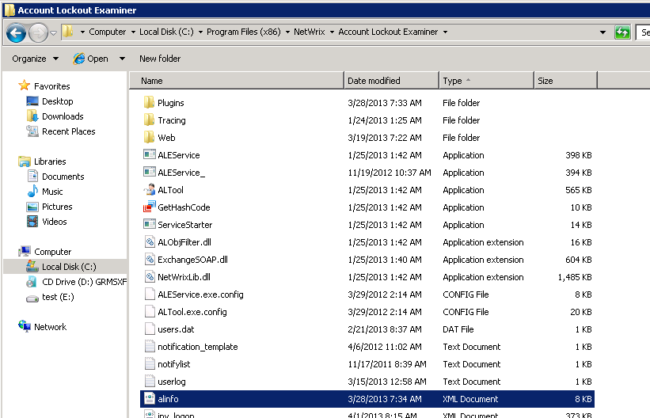
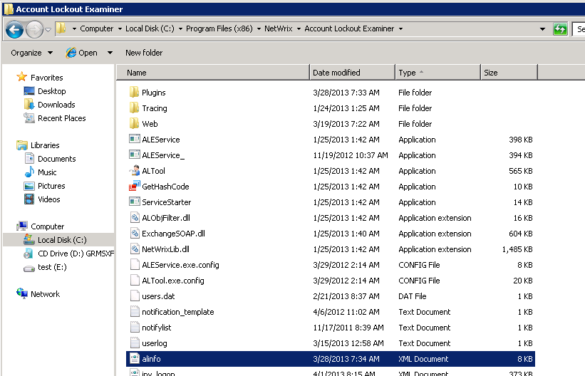

Can I export information on account lockout events for audit purposes?
NetWrix Account Lockout Examiner console does not have the Export feature. However all lockout information is stored in the allinfo.xml file located in the product installation directory. It can be easily parsed by third-party tool or script to get required information. However account names are not sotred in the allinfo.xml, all accounts are referred to as SIDs.  NetWrix also has another product called NetWrix Event Log Manager for this purpose. This product is able to collect event log entries from multiple computers across the network and centrally store all events in a central location in a compressed format. For more information, refer to the following link: https://www.netwrix.com/event_log_archiving_consolidation_freeware.html
NetWrix Account Lockout Examiner console does not have the Export feature. However all lockout information is stored in the allinfo.xml file located in the product installation directory. It can be easily parsed by third-party tool or script to get required information. However account names are not sotred in the allinfo.xml, all accounts are referred to as SIDs.  NetWrix also has another product called NetWrix Event Log Manager for this purpose. This product is able to collect event log entries from multiple computers across the network and centrally store all events in a central location in a compressed format. For more information, refer to the following link: https://www.netwrix.com/event_log_archiving_consolidation_freeware.html